Ad account rip · Nov 22, 2026
Cold Life (thecoldlife.com): every active ad, counted and ranked, with the top 20 statics and top 10 videos remade for Biscayne Water
Facebook page ID 100664769731295 · niche: filtered showerheads (the "Ultimate Shower Head") plus cold plunges · endorsed by Gary Brecka · nothing was posted or sent
~152active ads
69statics
83videos
0carousels
1. The counts
| Source | Active total | Statics | Videos | All-time |
|---|
| Foreplay daily snapshot (brand analytics, Nov 22) | 152 | 69 image | 83 | n/a |
| Foreplay ad-by-ad pull by page ID (live only) | 133 | 50 (28 single image + 22 DCO) | 83 | n/a |
| Foreplay brand record | 236 | n/a | n/a | 3,145 |
| Konvert brand record | 186 | n/a | n/a | 2,034 |
| Meta Ads Library page | Not read. The public page returned HTTP 403 without a login, and I didn't work around it. |
The number I trust: about 152 active ads, 69 statics and 83 videos. Both Foreplay sources agree on 83 videos. The 19-ad gap is all image ads that the daily snapshot counts but the ad-by-ad pull didn't return. The brand records (236 / 186) are higher because they refresh on a different schedule and include ads that stopped in the last few days. The Ads Library page will show its own number when someone opens it while signed in.
How carousels are counted: there are none. All 22 "DCO" ads (Meta dynamic creative) hold only images (2 or 3 image versions each), so I counted each as one static. The real number of distinct designs is much smaller. Among the top 26 static IDs, 5 were byte-for-byte the same file and 6 more were the same design in a different size.
2. How I ranked them
Signal: Konvert's "impressions rank". This is each ad's position within Cold Life's own ads by impressions, the same order the Ads Library shows when sorted by total impressions. It's a rank, not an impression count, and no spend, CTR or sales numbers exist for these ads. I collapsed exact copies and same-design resizes, then took the top 20 distinct static designs (ranks 1–49) and the top 10 distinct videos (ranks 3–46). One video (rank 26) was an exact copy of rank 14. Foreplay's own ranking endpoint needs a paid "Spyder" subscription to this page (it returned 403).
3. What Cold Life's account is doing (the pattern to steal)
- A few designs, many copies: the same few static designs run as 3–4 ad IDs in 9:16 and 1:1, and as DCO with 2–3 versions.
- Static design system: heavy condensed sans headlines, serif + italic pairings ("Almost Gone. Again"), one product hero on marble or tile, a round badge, a small pill CTA, and real-photo before/after splits.
- Video system: talking-head UGC creators (kitchen, podcast mic), side-by-side comparison "tests," green-screen over news and CDC pages, reverse psychology ("don't impulse buy"), and POV text-only unboxings.
- What we did NOT copy: price anchors, "% off," "sold out 11×" and "almost gone" scarcity, January 1 deadlines, the celebrity endorser, clinician counts, and every skin, hair, acne and eczema claim.
4. The 20 statics, side by side
13 run-ready · 4 minor fix · 3 needs fix. All 20 were made in Konvert (GPT Image 2.5) from the Biscayne Water brand profile, using the Cold Life ad as the layout reference. The cream tanks come from our real install photo, which I added to Konvert as a product asset, so the equipment isn't made up. I checked every image by eye for spelling, logo, colors, invented equipment and rule breaks. 4 tries with a person in the shower were blocked by the image model's safety filter and were remade with no people.
Before anything runs: (1) the site still says 100+ customers and a 10-year warranty, while the ads say 1000+ and an extended 15-year warranty, so update the site first; (2) confirm the lender's exact "subject to credit approval" wording; (3) a legal check on the EWG fine print.
#01 Impressions rank 1 · Ad Library ID 1346311500307210 RUN-READY
Cold Life original
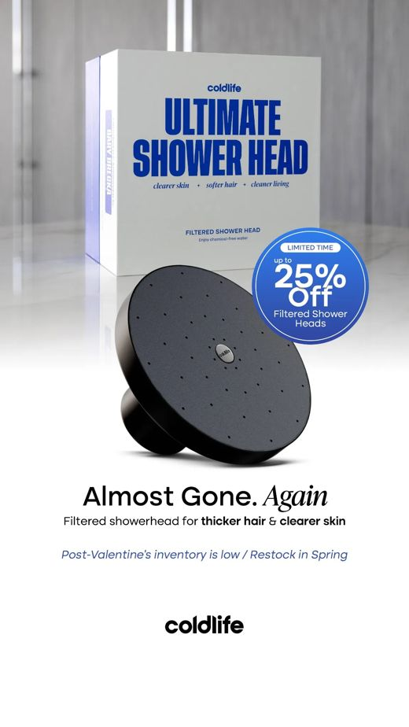
Biscayne Water remake (Konvert)
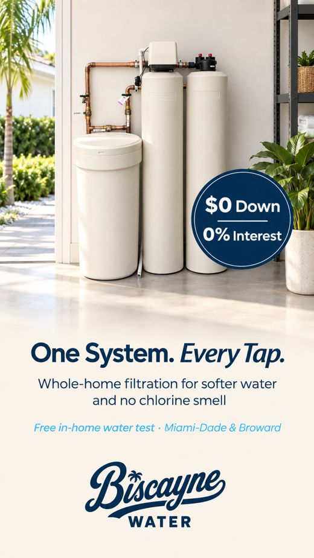
Original: Product box + showerhead hero, round "25% off" badge, "Almost Gone. Again" serif/italic headline, scarcity line. Duplicates folded in: exact copy 1074769088674747 (r5); same design 1:1 2162739894274662 (r2).
Headline: One System. Every Tap.
Primary text: Your kitchen sink, your shower, your washer. One whole-home system filters all of it. $0 down, 0% interest, payments as low as $69/mo. Book your free in-home water test.
Check: Uses our real installed tanks (uploaded as a Konvert product asset). Scarcity line removed.
File: statics/bw_rip_01.png
#02 Impressions rank 4 · Ad Library ID 1008353775567541 MINOR FIX
Cold Life original
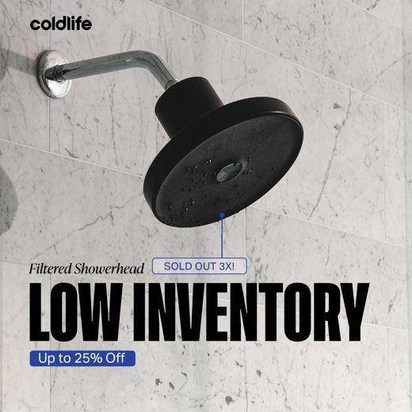
Biscayne Water remake (Konvert)
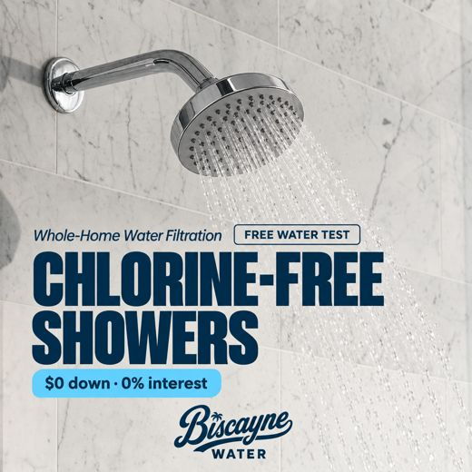
Original: Showerhead on marble, "SOLD OUT 3X" tag, giant condensed "LOW INVENTORY", "up to 25% off" pill. Duplicates folded in: exact copy 3168985826779065 (r12); same design 9:16 1427876585456394 (r21).
Headline: CHLORINE-FREE SHOWERS
Primary text: Filter the chlorine and chloramine out of every shower in your home, not just one. $0 down, 0% interest. Free in-home water test in Miami-Dade & Broward.
Check: "Chlorine-free" is an absolute claim. Safer wording: "CHLORINE-FILTERED SHOWERS". Scarcity removed.
File: statics/bw_rip_02.png
#03 Impressions rank 7 · Ad Library ID 2131167627607551 RUN-READY
Cold Life original
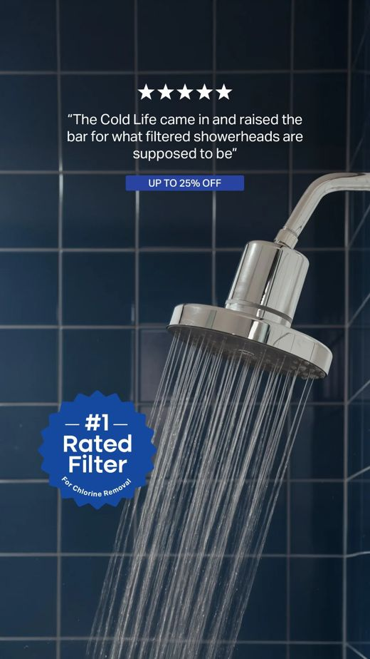
Biscayne Water remake (Konvert)
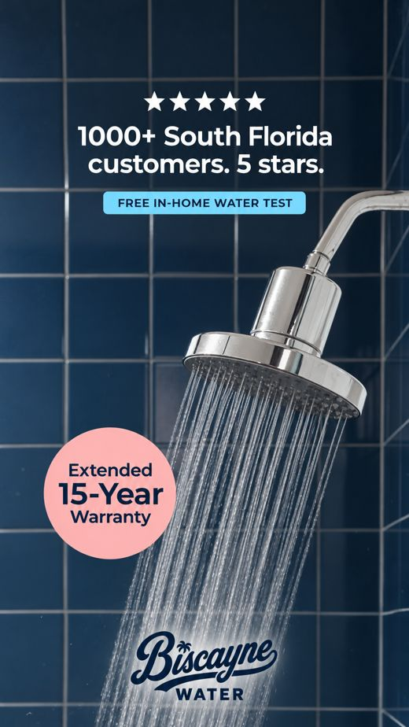
Original: Navy tile shower, 5 stars + customer quote, "#1 Rated Filter" badge, "up to 25% off". Duplicates folded in: exact copy 1520091249930036 (r15).
Headline: 1000+ South Florida customers. 5 stars.
Primary text: 1000+ South Florida homeowners, 5 stars. Every system comes with an extended 15-year warranty. Book your free in-home water test.
Check: No invented quote: the quote slot became the approved social-proof line. "#1 rated" dropped.
File: statics/bw_rip_03.png
#04 Impressions rank 8 · Ad Library ID 2850628398635665 RUN-READY
Cold Life original
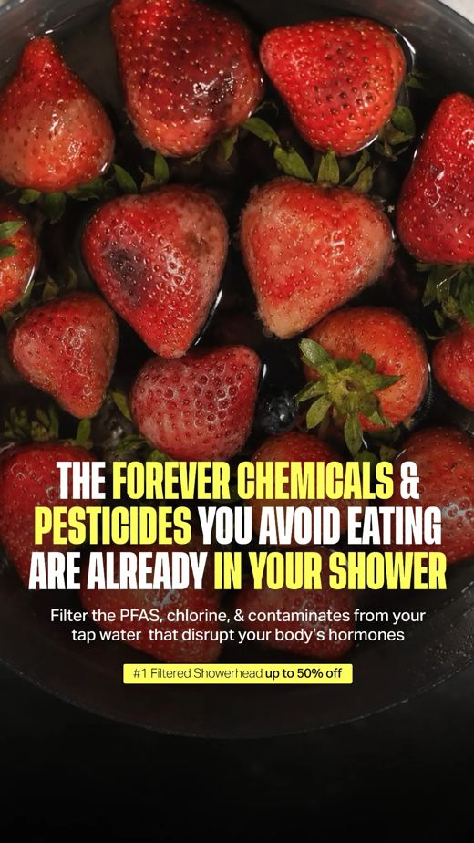
Biscayne Water remake (Konvert)
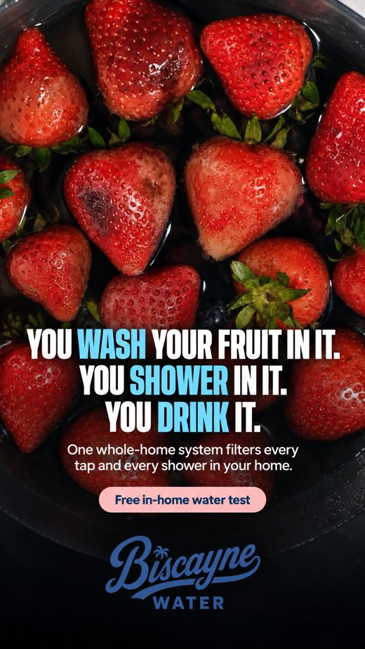
Original: Wet strawberries, huge condensed headline with highlighted words about forever chemicals in your shower, "#1 / 50% off" pill. Duplicates folded in: exact copy 2154345062150285 (r20); same design 1:1 1728849348382324 (r17).
Headline: You wash your fruit in it. You shower in it. You drink it.
Primary text: The same water touches your food, your skin and your glass. One whole-home system filters every tap and every shower. Free in-home water test.
Check: Kept the food hook, dropped the fear/PFAS claim so no fine print is needed.
File: statics/bw_rip_04.png
#05 Impressions rank 9 · Ad Library ID 823326717493437 RUN-READY
Cold Life original
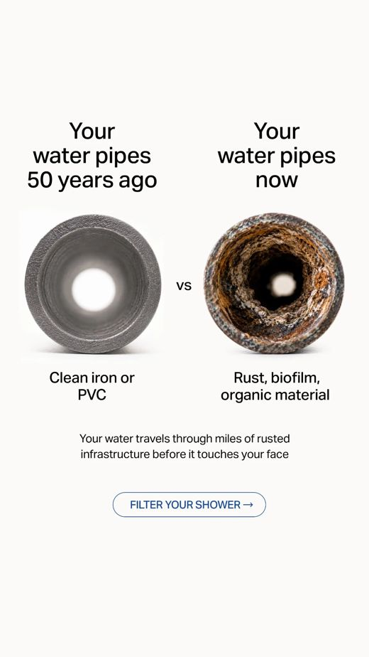
Biscayne Water remake (Konvert)
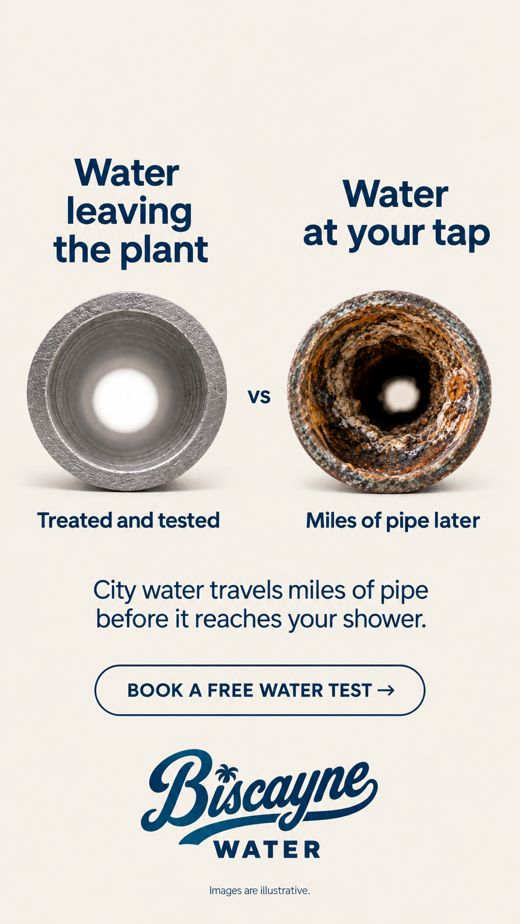
Original: Cream card: "Your water pipes 50 years ago" vs "now" pipe cross-sections, "Filter your shower" button. Duplicates folded in: same design 1:1 2163800637820990 (r16).
Headline: Water leaving the plant vs. water at your tap
Primary text: City water travels miles of pipe before it reaches your shower. A whole-home system filters it where it enters your house. Book a free water test.
Check: "Images are illustrative" fine print included. Pipe photo is generic, not a Miami pipe.
File: statics/bw_rip_05.png
#06 Impressions rank 10 · Ad Library ID 1698739714534630 NEEDS FIX
Cold Life original
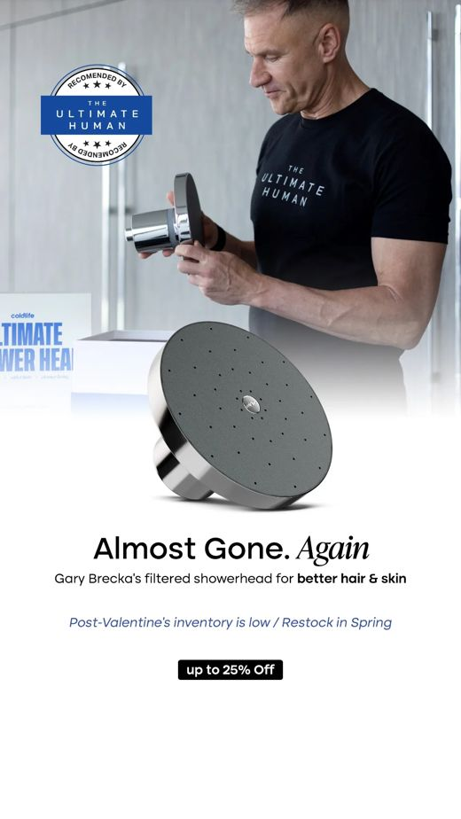
Biscayne Water remake (Konvert)
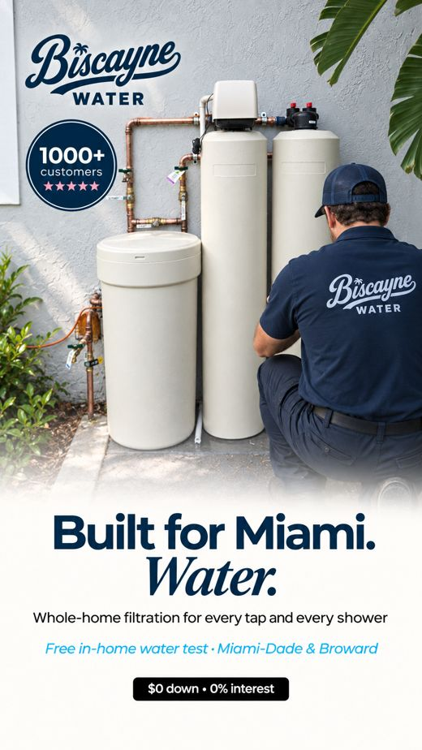
Original: Celebrity endorser (Gary Brecka) holding product, "Ultimate Human" seal, "Almost Gone. Again". Duplicates folded in: exact copy 2101365277184979 (r27); same design 1:1 1576854933354467 (r25).
Headline: Built for Miami Water.
Primary text: Built for Miami-Dade and Broward water: chlorine, chloramine and hardness. Whole-home filtration with $0 down, 0% interest. Free in-home water test.
Check: Headline rendered as "Built for Miami. Water." (my prompt typo; needs a regen or text fix). Tech wears an AI-invented Biscayne polo; use a real crew photo.
File: statics/bw_rip_06.png
#07 Impressions rank 11 · Ad Library ID 1072991005429024 RUN-READY
Cold Life original
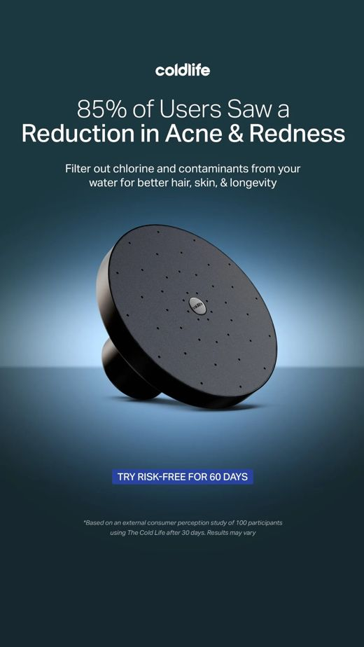
Biscayne Water remake (Konvert)
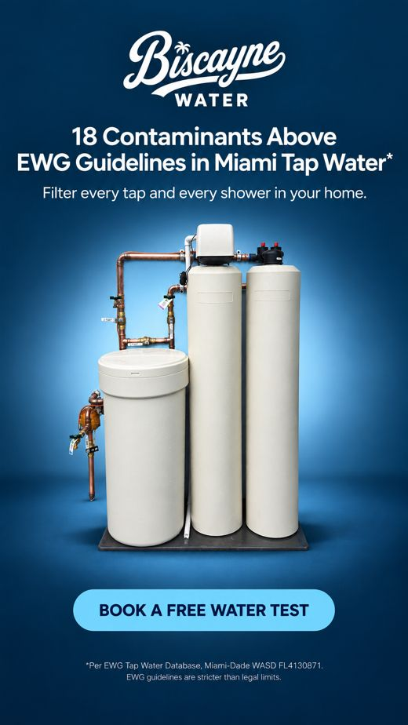
Original: Dark navy gradient, "85% of users saw a reduction in acne & redness", product spotlight, "Try risk-free 60 days", study fine print. Duplicates folded in: exact copy 1225478293107979 (r19); same design 1:1 1764709874676530 (r40).
Headline: 18 Contaminants Above EWG Guidelines in Miami Tap Water*
Primary text: EWG found 18 contaminants above its health guidelines in Miami tap water.* Filter every tap and every shower. Book your free in-home water test. *Per EWG Tap Water Database, Miami-Dade WASD FL4130871; EWG guidelines are stricter than legal limits.
Check: Medical claim swapped for a sourced EWG fact with fine print on the image.
File: statics/bw_rip_07.png
#08 Impressions rank 13 · Ad Library ID 1774865726871134 RUN-READY
Cold Life original
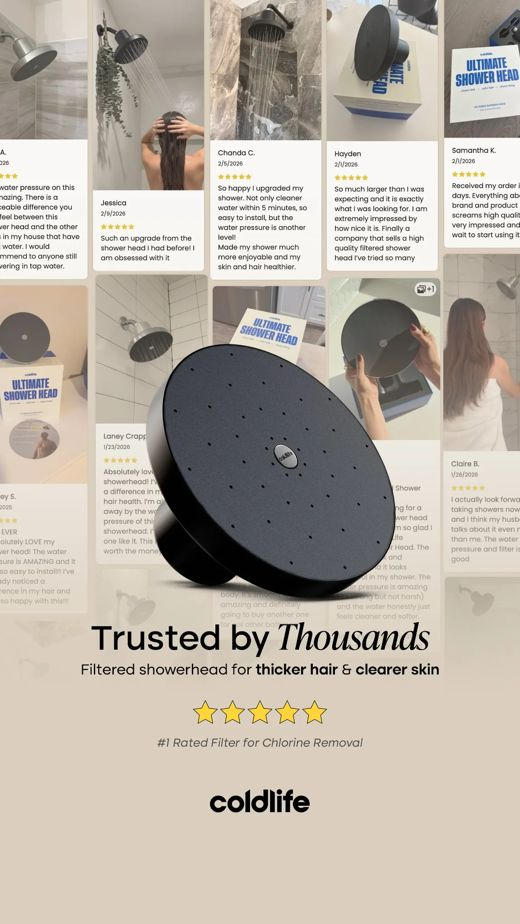
Biscayne Water remake (Konvert)
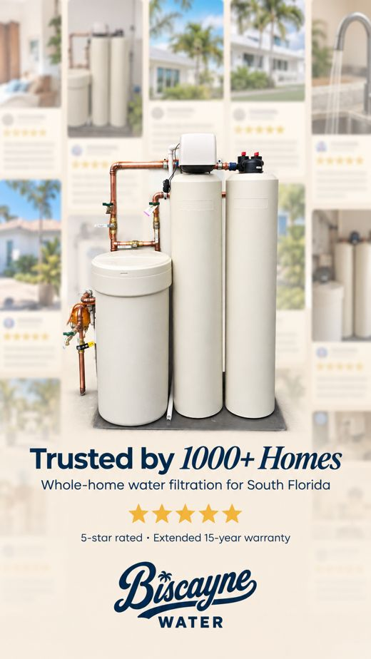
Original: Collage of real customer reviews/photos, product center, "Trusted by Thousands", 5 stars. Duplicates folded in: same design 1:1 792342273974503 (r28).
Headline: Trusted by 1000+ Homes
Primary text: 1000+ South Florida homes trust Biscayne Water. 5 stars. Extended 15-year warranty. Book your free in-home water test.
Check: Background review cards are blurred and unreadable, so no fake reviews. Swap in real Google review screenshots for an even stronger version.
File: statics/bw_rip_08.png
#09 Impressions rank 18 · Ad Library ID 1504817534576339 RUN-READY
Cold Life original
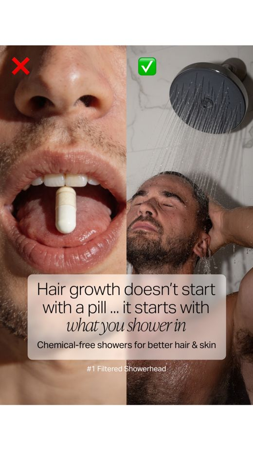
Biscayne Water remake (Konvert)
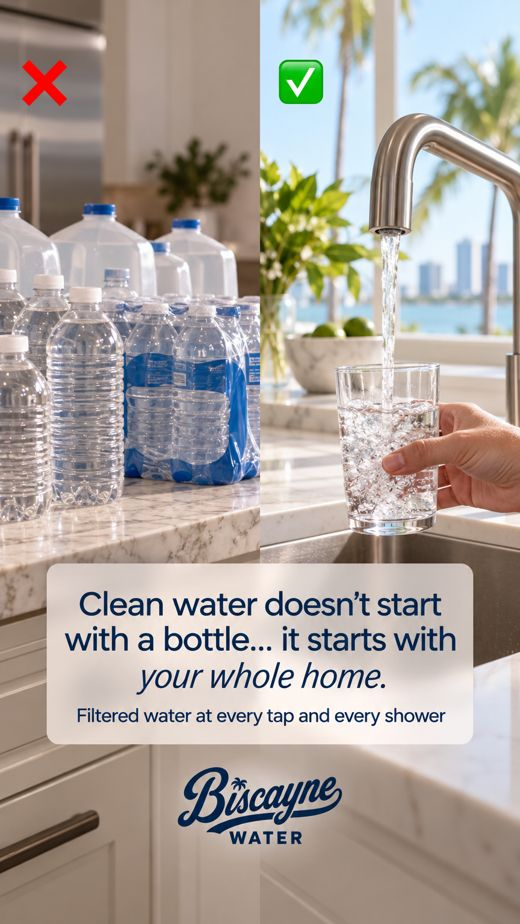
Original: Split: man with pill on tongue (X) vs man in shower (check), frosted caption "Hair growth doesn't start with a pill… it starts with what you shower in". Duplicates folded in: same design 1:1 1579736273475900 (r33).
Headline: Clean water doesn't start with a bottle… it starts with your whole home.
Primary text: Stop hauling cases of bottled water. Get filtered water at every tap and every shower. $0 down, 0% interest. Free in-home water test.
Check: Bottled-water contrast fits the approved "half vs bottled water" angle. No faces.
File: statics/bw_rip_09.png
#10 Impressions rank 22 · Ad Library ID 1115981904154395 RUN-READY
Cold Life original
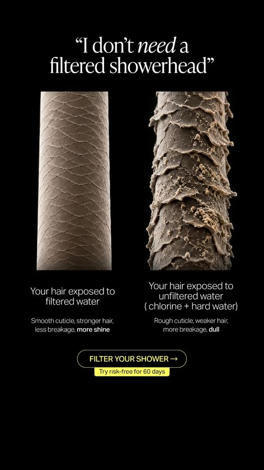
Biscayne Water remake (Konvert)
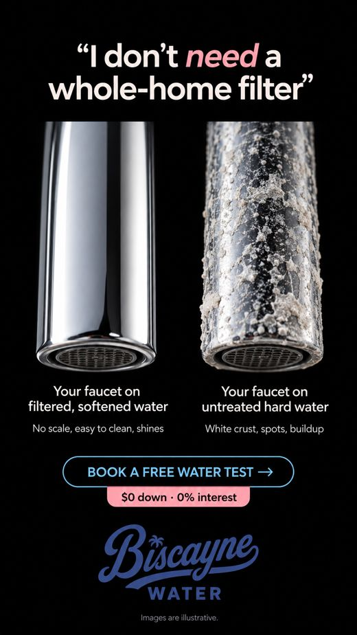
Original: Black: quote "I don't need a filtered showerhead", macro hair strands filtered vs unfiltered, "Filter your shower" button. Duplicates folded in: same design 1:1 1844532893227640 (r34).
Headline: "I don't need a whole-home filter"
Primary text: Hard water leaves white crust on every faucet and shower door. Softened, filtered water does not. $0 down, 0% interest. Book a free water test.
Check: Hair macro swapped for faucet scale. "Images are illustrative" included.
File: statics/bw_rip_10.png
#11 Impressions rank 23 · Ad Library ID 1124733047123836 NEEDS FIX
Cold Life original
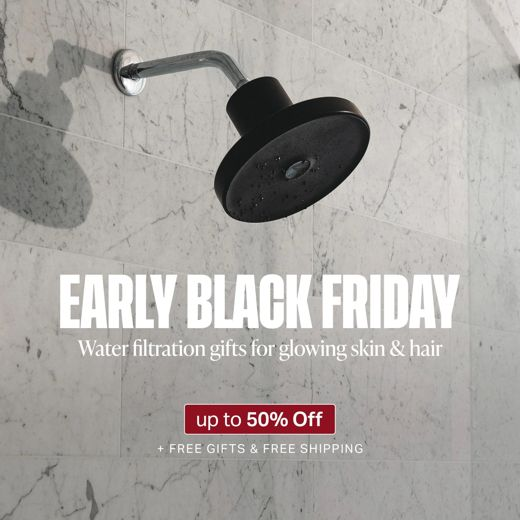
Biscayne Water remake (Konvert)
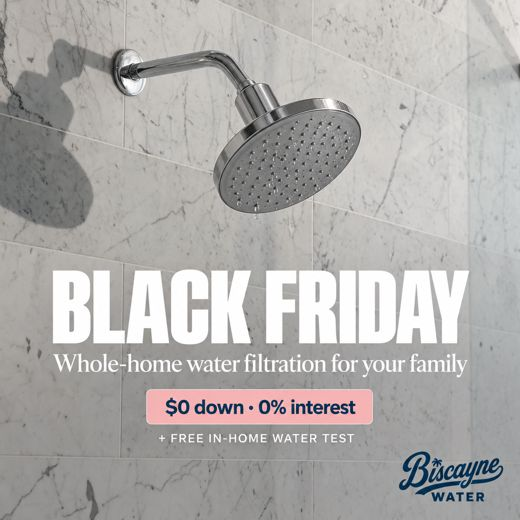
Original: Marble shower, "EARLY BLACK FRIDAY", "up to 50% off", "free gifts & free shipping". Duplicates folded in: same design 9:16 4439302552880730 (r37).
Headline: BLACK FRIDAY
Primary text: [Hold until the Black Friday offer is locked.] Whole-home water filtration for your family. $0 down, 0% interest + free in-home water test.
Check: Hold: there is no confirmed Black Friday offer yet, so "Black Friday" with no real deal reads as fake urgency. Add the real offer and end date before running.
File: statics/bw_rip_11.png
#12 Impressions rank 24 · Ad Library ID 1388970483339991 MINOR FIX
Cold Life original
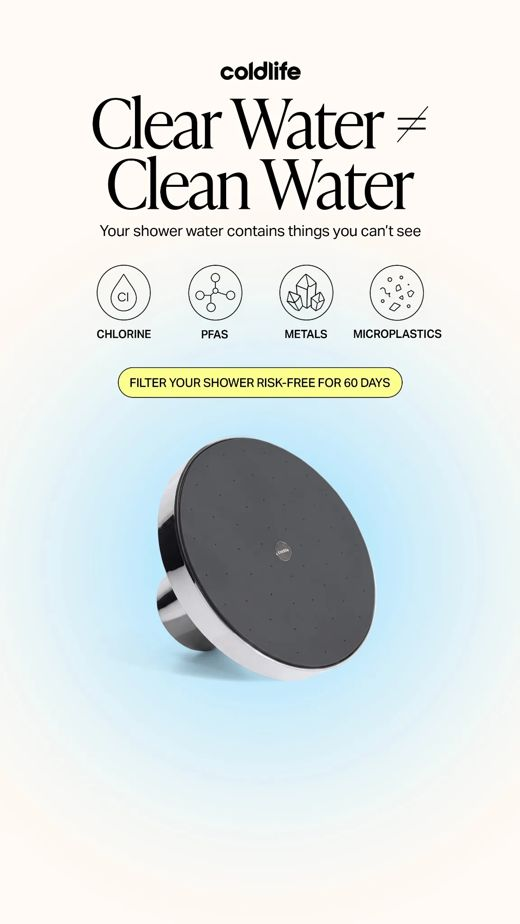
Biscayne Water remake (Konvert)
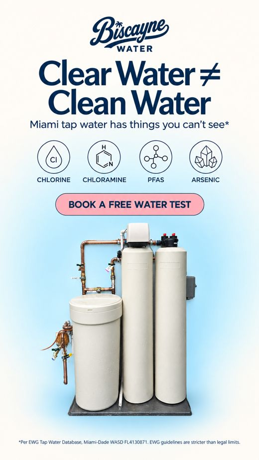
Original: Soft gradient, "Clear Water ≠ Clean Water", 4 contaminant icons, product with glow.
Headline: Clear Water ≠ Clean Water
Primary text: Miami tap water can look clear and still carry chlorine, chloramine, PFAS and arsenic.* Book a free in-home water test. *Per EWG Tap Water Database, Miami-Dade WASD FL4130871; EWG guidelines are stricter than legal limits.
Check: The "chloramine" icon is a made-up chemistry symbol. Swap it for a plain icon.
File: statics/bw_rip_12.png
#13 Impressions rank 29 · Ad Library ID 2852737831772094 MINOR FIX
Cold Life original
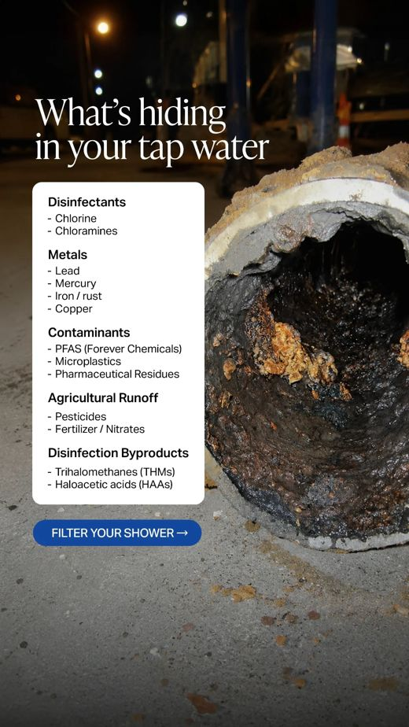
Biscayne Water remake (Konvert)
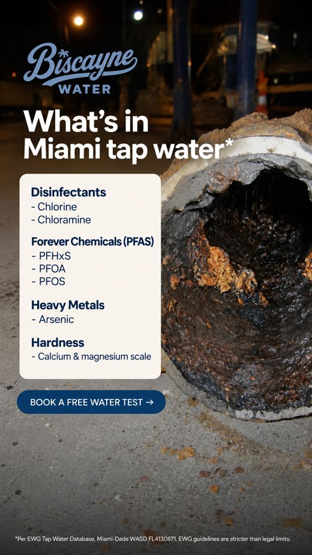
Original: Dark corroded-pipe photo, "What's hiding in your tap water", white list card of contaminants, blue button.
Headline: What's in Miami tap water*
Primary text: Disinfectants, forever chemicals, arsenic and hard-water scale. See what is in your water with a free in-home test.* *Per EWG Tap Water Database, Miami-Dade WASD FL4130871; EWG guidelines are stricter than legal limits.
Check: "Hardness" is not an EWG finding, but it sits under the EWG asterisk. Move it out or note "hardness per in-home test". Add "image is illustrative" for the pipe.
File: statics/bw_rip_13.png
#14 Impressions rank 30 · Ad Library ID 1726928511888294 RUN-READY
Cold Life original
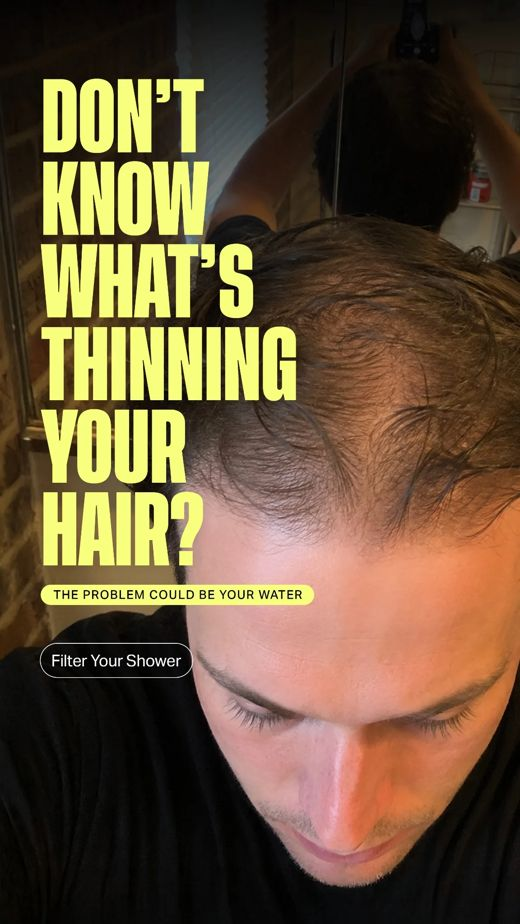
Biscayne Water remake (Konvert)
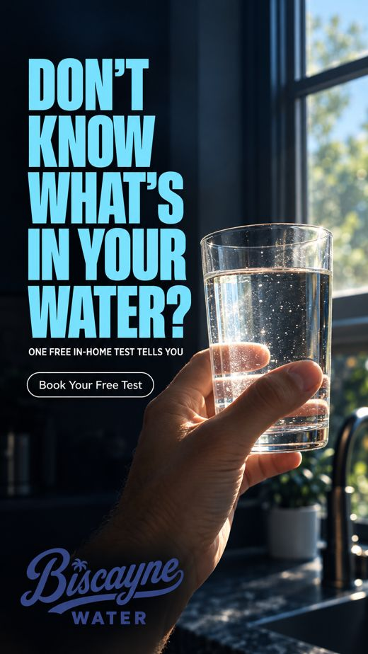
Original: Top of a man's thinning head, giant condensed "DON'T KNOW WHAT'S THINNING YOUR HAIR?", "the problem could be your water".
Headline: DON'T KNOW WHAT'S IN YOUR WATER?
Primary text: Most homeowners have never had their water tested. One free in-home test tells you exactly what is in yours. Miami-Dade & Broward.
Check: Hair-loss claim removed (medical). Same type stack and color pop.
File: statics/bw_rip_14.png
#15 Impressions rank 31 · Ad Library ID 1748779922840799 NEEDS FIX
Cold Life original
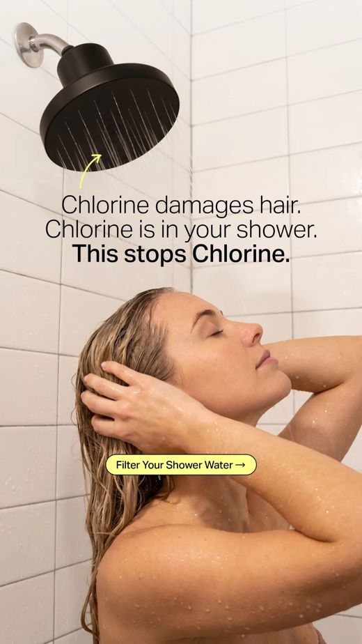
Biscayne Water remake (Konvert)
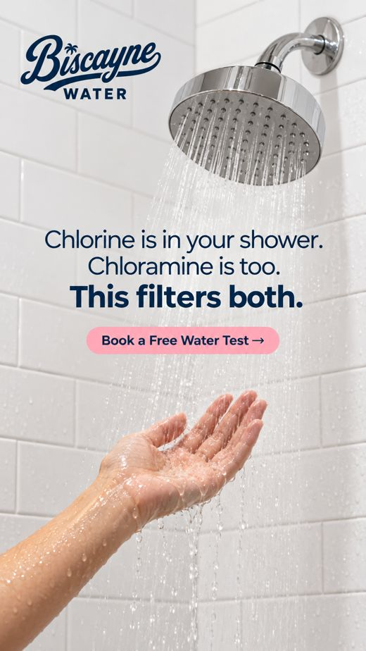
Original: Woman rinsing hair under showerhead, "Chlorine damages hair. Chlorine is in your shower. This stops chlorine."
Headline: Chlorine is in your shower. Chloramine is too. This filters both.
Primary text: Miami-Dade disinfects with chlorine and chloramine. A whole-home system filters both before they reach your shower. Book a free water test.
Check: "This filters both" points at a showerhead, which suggests we sell a shower filter. Change to "Our whole-home system filters both" or add the tank photo. (The first try with a person was blocked by the image model; the retry has no people.)
File: statics/bw_rip_15.png
#16 Impressions rank 32 · Ad Library ID 1374246361578043 RUN-READY
Cold Life original
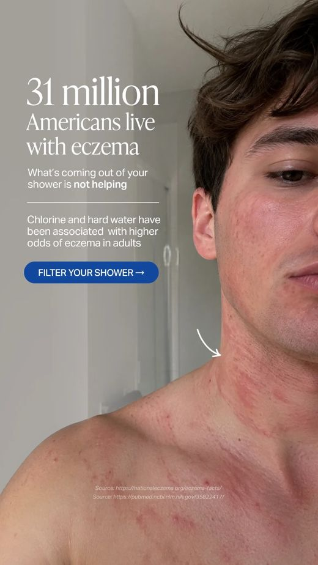
Biscayne Water remake (Konvert)
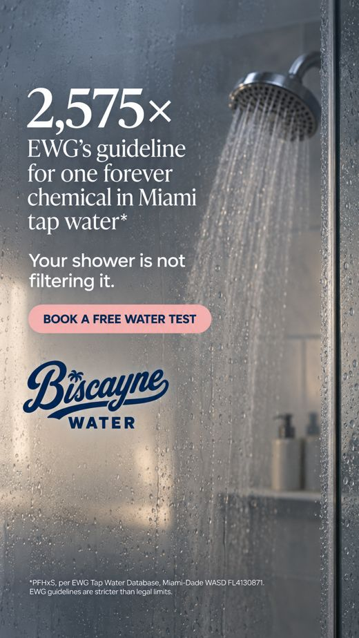
Original: Man with eczema on neck, "31 million Americans live with eczema", "Filter your shower" button.
Headline: 2,575× EWG's guideline for one forever chemical in Miami tap water*
Primary text: One forever chemical (PFHxS) shows up in Miami tap water at 2,575x EWG's health guideline.* Your shower is not filtering it. Book a free water test. *Per EWG Tap Water Database, Miami-Dade WASD FL4130871; EWG guidelines are stricter than legal limits.
Check: Eczema (medical) swapped for the sourced PFHxS stat with fine print. No people.
File: statics/bw_rip_16.png
#17 Impressions rank 35 · Ad Library ID 1459996976082013 RUN-READY
Cold Life original
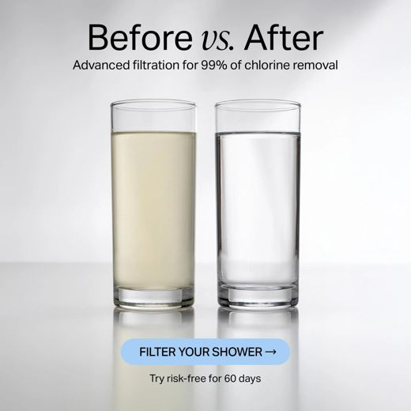
Biscayne Water remake (Konvert)
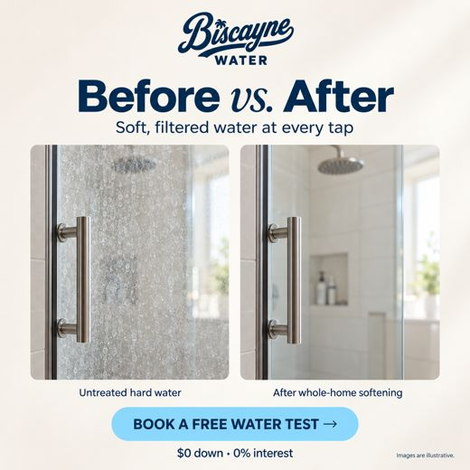
Original: Before vs. After: two glasses of water (cloudy vs clear), "Advanced filtration for 99% of chlorine removal".
Headline: Before vs. After
Primary text: Hard-water spots on the shower door, gone. Soft, filtered water at every tap. $0 down, 0% interest. Book a free water test.
Check: Cloudy-glass demo dropped (Miami tap is usually clear, so it would be a cheat demo). Shower-door scale is honest for softening. "Images are illustrative" included.
File: statics/bw_rip_17.png
#18 Impressions rank 39 · Ad Library ID 2180550119178983 MINOR FIX
Cold Life original
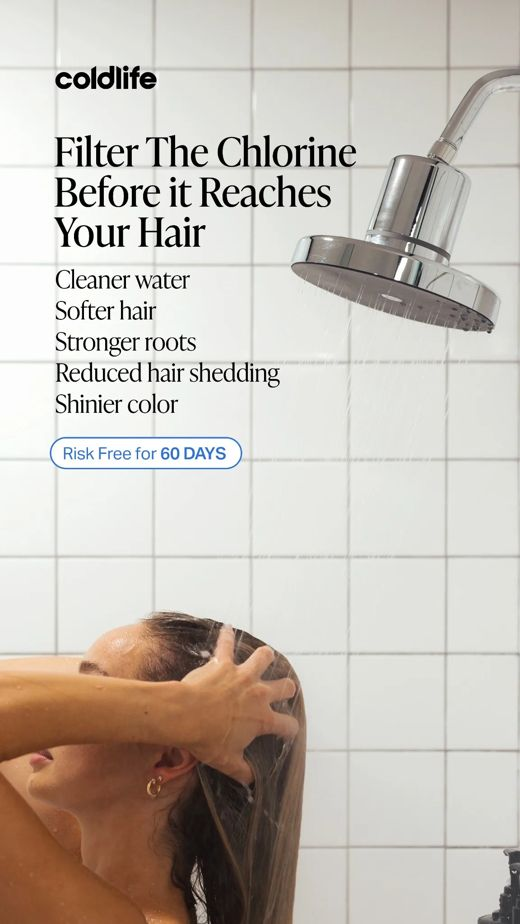
Biscayne Water remake (Konvert)
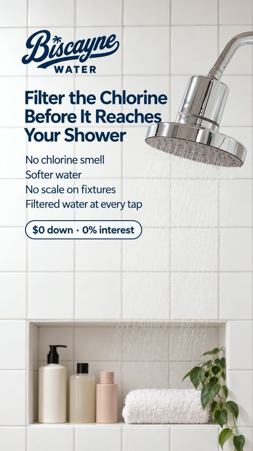
Original: White tile, woman washing hair, "Filter the Chlorine Before it Reaches Your Hair" + benefit list, "Risk free for 60 days".
Headline: Filter the Chlorine Before It Reaches Your Shower
Primary text: No chlorine smell. Softer water. No scale on fixtures. Filtered water at every tap. $0 down, 0% interest.
Check: The showerhead has a filter-style body, so it may read as a shower filter. Use a plain showerhead or add the tank photo.
File: statics/bw_rip_18.png
#19 Impressions rank 41 · Ad Library ID 1489950679673786 RUN-READY
Biscayne Water remake (Konvert)
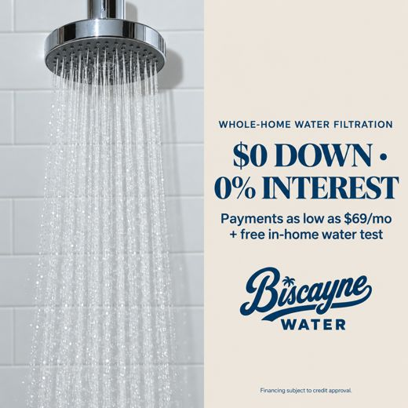
Original: Split: woman under shower / panel "Early Black Friday, up to 50% off, + free gifts & shipping".
Headline: $0 DOWN · 0% INTEREST
Primary text: Whole-home water filtration with $0 down, 0% interest, payments as low as $69/mo, plus a free in-home water test. Financing subject to credit approval.
Check: The discount panel became the approved financing offer. "Subject to credit approval" is on the image. Confirm the lender's exact wording.
File: statics/bw_rip_19.png
#20 Impressions rank 49 · Ad Library ID 4438508483029163 RUN-READY
Cold Life original
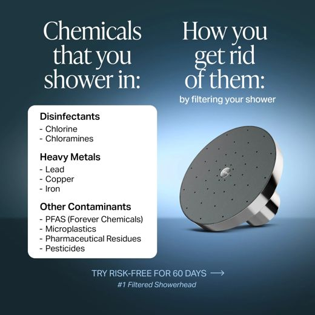
Biscayne Water remake (Konvert)
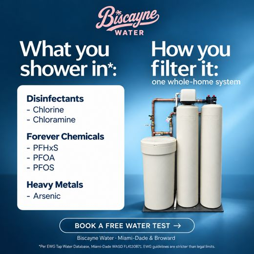
Original: Two columns: "Chemicals that you shower in" list card vs "How you get rid of them: by filtering your shower" + product.
Headline: What you shower in*: / How you filter it: one whole-home system
Primary text: Chlorine, chloramine, forever chemicals and arsenic.* One whole-home system filters them at every tap. Book your free water test. *Per EWG Tap Water Database, Miami-Dade WASD FL4130871; EWG guidelines are stricter than legal limits.
Check: Uses our real tanks. Fine print on the image.
File: statics/bw_rip_20.png
5. The 10 video remakes (scripts)
Neither Konvert nor Foreplay makes video, so each remake is a shoot-ready script: hook, shot list with VO and on-screen text, real b-roll, AI prompts for filler shots only, and Meta copy. Transcripts come from Foreplay and Konvert. Video #9 has no voiceover (music and text only).
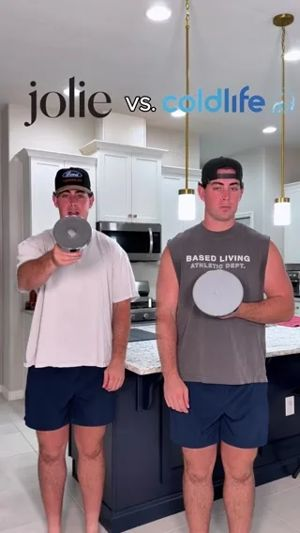
Video #01 · impressions rank 3 · 41s · live since 2026-09-22 · ID 1613019310497602
"I'm a fridge filter." / "I'm a whole-home system."
Cold Life original: Two guys in a kitchen each "play" a showerhead (competitor vs Cold Life) and trade one-line brags: "I filter 66%… I filter 75%. I'm small… I'm big." Ends with price, 60-day guarantee and "sold out 7 times" scarcity.
Hook (first 3s): Two people side by side in a Miami kitchen. Left holds a fridge water-filter cartridge: "I filter one tap." Right stands next to the tanks: "I filter every tap."
| Time | Shot | VO | On-screen text |
|---|
| 0–3s | Two-shot, kitchen. Left holds fridge cartridge, right gestures at the system (cut-in of real install photo). | L: "I filter one tap." R: "I filter every tap." | FRIDGE FILTER vs WHOLE-HOME |
| 3–9s | Alternating close-ups, quick cuts. | L: "I miss your shower." R: "I filter your shower too." L: "I miss chloramine." R: "Chloramine too." | Chlorine + chloramine* |
| 9–16s | L pours a glass from the fridge; R turns on the shower. | L: "I get swapped every few months." R: "I come with an extended 15-year warranty." | Extended 15-year warranty |
| 16–24s | R walks to the installed tanks (real photo / real install b-roll). | R: "I'm built for Miami water. Chlorine, chloramine, hard water." | Built for Miami-Dade & Broward |
| 24–33s | Both face camera. | L: "So how much are you?" R: "$0 down, 0% interest. Payments as low as $69 a month." | $0 down · 0% interest · from $69/mo |
| 33–41s | R hands L a test kit. End card with logo. | R: "Start with a free in-home water test. Tap below." | Book your free water test → biscaynewater.com |
B-roll from real assets: Real install photo (bw_assets/install_dual_tank_softener_01.jpg) as a cut-in; film the two-hander live (needs 2 people, 1 kitchen).
AI-video prompts (filler only):
- Vertical 9:16, bright modern South Florida kitchen, close-up of a hand pulling a used refrigerator water filter cartridge out of a fridge, natural window light, realistic.
- Vertical 9:16, slow push-in on a chrome shower spraying clear water against white tile, steam, no people.
Meta headline: Fridge filter vs. whole-home: one tap or every tap?
Primary text: Your fridge filter only covers one tap. Your shower, your sink and your washer get the rest. A Biscayne Water whole-home system filters every tap, with an extended 15-year warranty. $0 down, 0% interest, payments as low as $69/mo. Book your free in-home water test.
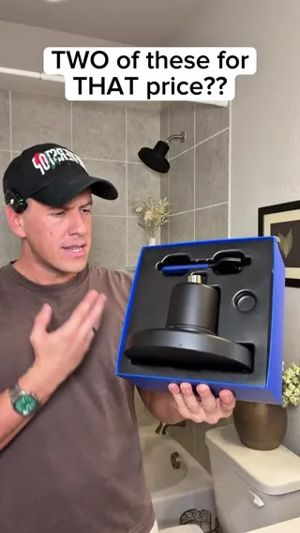
Video #02 · impressions rank 6 · 27s · live since 2026-09-14 · ID 1099664279186235
"Please tell me you're seeing this."
Cold Life original: Creator in a cap holds the box up: "Please tell me you guys are seeing the Labor Day price on this thing", then shows features and "grab 2 before they sell out".
Hook (first 3s): Creator holds a phone up to camera with the Biscayne Water quiz page open: "Please tell me you guys are seeing this. Whole-home water for $0 down?"
| Time | Shot | VO | On-screen text |
|---|
| 0–3s | Selfie-style, creator holding phone with biscaynewater.com on screen. | "Please tell me you guys are seeing this. Whole-home water for zero down?" | $0 DOWN?? |
| 3–10s | Cut to real install photo, then walkaround of tanks. | "This is a full Biscayne Water system: carbon, softener and RO for drinking water." | Every tap · every shower |
| 10–17s | Creator at kitchen sink, then shower. | "One system covers the kitchen, the showers, the kids' bathroom. All of it." | No chlorine smell · softer water |
| 17–23s | Creator to camera, counting on fingers. | "Zero down, zero percent interest, payments as low as 69 a month, and an extended 15-year warranty." | $0 down · 0% interest · from $69/mo |
| 23–27s | End card. | "They'll test your water for free first. Link below." | Free in-home water test → |
B-roll from real assets: Real install photo; screen recording of biscaynewater.com/quiz.
AI-video prompts (filler only):
- Vertical 9:16, a smiling homeowner in a sunny Miami living room holding a smartphone toward the camera, casual UGC style, shallow depth of field.
Meta headline: Whole-home water for $0 down
Primary text: Whole-home water filtration for every tap and every shower in your home. $0 down, 0% interest, payments as low as $69/mo, plus an extended 15-year warranty. 1000+ South Florida customers, 5 stars. Start with a free in-home water test.
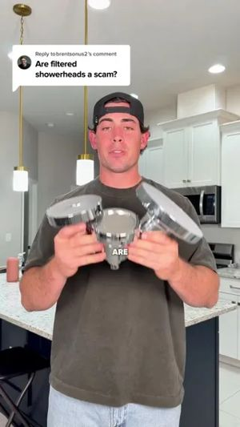
Video #03 · impressions rank 14 · 59s · live since 2026-11-09 · ID 893034297165555
"Are water filters a scam? I tested 3 so you don't have to."
Cold Life original: "Are filtered showerheads a scam? I bought all the top ones and tested them": creator compares 2 named competitors (price, chlorine %, clinicians) then Cold Life, ends on half-off + "sold out 11 times".
Hook (first 3s): Creator lines up a pitcher filter, a fridge filter and a test-strip kit: "Are water filters a scam? I tested three so you don't have to."
| Time | Shot | VO | On-screen text |
|---|
| 0–3s | Three options on a counter + test strips. | "Are water filters a scam? I tested three so you don't have to." | ARE WATER FILTERS A SCAM? |
| 3–15s | Dip strip in pitcher water; hold to camera. | "The pitcher: helps your drinking water. Does nothing for your shower." | Pitcher: 1 jug |
| 15–27s | Fridge filter; strip test. | "The fridge filter: one tap. And you swap it every few months." | Fridge: 1 tap |
| 27–42s | Biscayne Water tech runs a free in-home test; show real readings at a real home. | "A whole-home system tests your water first, then filters every tap and shower." | Whole-home: every tap |
| 42–52s | Tanks (real photo), shower running. | "Built for Miami water: chlorine, chloramine and hard water. Extended 15-year warranty." | Extended 15-year warranty |
| 52–59s | Creator to camera, end card. | "Zero down, zero percent interest. Start with the free test. Link below." | $0 down · 0% interest → Book free test |
B-roll from real assets: Must film real test-strip readings at a customer home (no faked colors). Real install photo.
AI-video prompts (filler only):
- Vertical 9:16, macro shot of a water test strip being dipped into a clear glass of tap water on a white kitchen counter, realistic lighting.
Meta headline: I tested 3 water filters so you don't have to
Primary text: A pitcher covers a jug. A fridge filter covers one tap. A whole-home system covers every tap and every shower. See what is in your water first with a free in-home test. $0 down, 0% interest, payments as low as $69/mo.
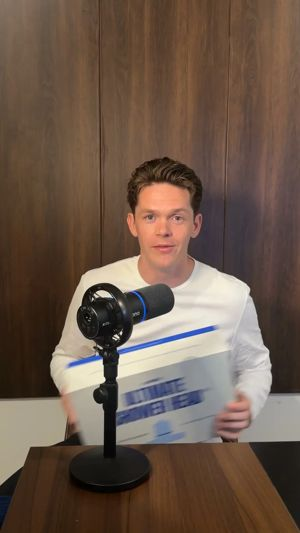
Video #04 · impressions rank 36 · 24s · live since 2026-11-06 · ID 1153380570423649
Owner at the mic: "This right here goes in your garage."
Cold Life original: Founder at a podcast mic unboxes "Gen 2" and talks about the packaging (a Bible verse printed on the back). Yellow title text, captions.
Hook (first 3s): Owner at a podcast mic slaps a hand on the tank: "This right here is what makes every tap in your house better."
| Time | Shot | VO | On-screen text |
|---|
| 0–3s | Owner at desk mic, tank or control head beside him. | "This right here is what makes every tap in your house better." | WHOLE-HOME WATER |
| 3–10s | Cut to real install photo, then each tank. | "Carbon for chlorine and chloramine. A softener for hard water. RO for your drinking water." | Carbon · Softener · RO |
| 10–17s | Back to owner. | "We built it for Miami-Dade and Broward water, and it comes with an extended 15-year warranty." | Extended 15-year warranty |
| 17–24s | Owner points at camera; end card. | "Zero down, zero percent interest. Book a free water test." | $0 down · 0% interest |
B-roll from real assets: Real install photo; owner on camera (AG/Steve) at a mic.
AI-video prompts (filler only):
- Vertical 9:16, cinematic close-up of a cream water softener control valve with a soft LED display, garage setting, shallow depth of field.
Meta headline: What actually goes in your garage
Primary text: Carbon for chlorine and chloramine. A softener for hard water. RO for drinking water. One Biscayne Water system, built for South Florida, with an extended 15-year warranty. $0 down, 0% interest. Book your free in-home water test.
Video #05 · impressions rank 38 · 50s · live since 2026-11-10 · ID 39917092324600973
Owner explains the reason why: "Why we test your water for free."
Cold Life original: Founder on a leather couch, podcast style: "Starting January 1st we are no longer running large discounts", then explains the reason why (they lose money on the first sale and earn on filter subscriptions).
Hook (first 3s): Owner on a couch, mic in frame: "People ask me why we test their water for free. Here's the honest answer."
| Time | Shot | VO | On-screen text |
|---|
| 0–4s | Podcast two-camera setup. | "People ask me why we test their water for free. Here's the honest answer." | WHY IS THE TEST FREE? |
| 4–16s | Cut to tech testing water at a sink. | "Because most people have no idea what's in their water until they see it. Once they see it, they decide for themselves." | You see it first |
| 16–28s | Doug's contaminant sheet on screen (real asset). | "In Miami, EWG lists 18 contaminants above its health guidelines." | 18 contaminants above EWG guidelines* |
| 28–40s | Back to owner. | "We don't push. If your water's fine, we'll tell you. If it's not, we have one system built for it." | No pressure. Real readings. |
| 40–50s | End card with logo. | "Zero down, zero percent interest, extended 15-year warranty. Book the free test." | $0 down · 0% interest → Free test |
B-roll from real assets: Doug's US-vs-THEM contaminant sheet (bw_assets/doug_126755.jpg); real install photo; podcast setup.
AI-video prompts (filler only):
- Vertical 9:16, a water technician's hands running a water test at a kitchen sink, test vials and strips on the counter, natural light, no faces.
Meta headline: Why we test your water for free
Primary text: Why is our in-home water test free? Because most people don't know what's in their water until they see it. EWG lists 18 contaminants above its health guidelines in Miami tap water.* See yours, then decide. $0 down, 0% interest. *Per EWG Tap Water Database, Miami-Dade WASD FL4130871; EWG guidelines are stricter than legal limits.
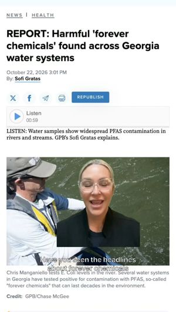
Video #06 · impressions rank 42 · 48s · live since 2026-11-17 · ID 2195429291373014
Green-screen: "You filter your drinking water… and forget your shower."
Cold Life original: Green-screen explainer over a news headline about forever chemicals and a CDC page about chlorine/chloramine. "You filter your drinking water and forget your shower… sure, you could do a whole-house system, but that's a bigger project."
Hook (first 3s): Creator green-screened over the EWG Tap Water Database page for Miami-Dade: "You filter your drinking water. But what about your shower?"
| Time | Shot | VO | On-screen text |
|---|
| 0–4s | Green screen over EWG Miami-Dade page. | "You filter your drinking water. But what about your shower?" | WHAT ABOUT YOUR SHOWER? |
| 4–14s | Green screen over Miami-Dade WASD water quality report. | "Miami-Dade disinfects with chlorine and chloramine. That's on purpose, and it's legal." | Chlorine + chloramine |
| 14–26s | EWG list zoom. | "But EWG lists 18 contaminants above its health guidelines here, and EWG's bar is stricter than the legal limit." | 18 above EWG guidelines* |
| 26–38s | Real install photo. | "A shower filter covers one shower. A whole-home system filters it where it enters your house: every tap, every shower." | One system · every tap |
| 38–48s | Creator to camera, end card. | "Biscayne Water will test yours for free. Zero down, zero percent interest." | Free in-home test → biscaynewater.com |
B-roll from real assets: Screen recordings of EWG Tap Water Database (FL4130871) and WASD report; real install photo.
AI-video prompts (filler only):
- None needed: screen recordings + real footage only.
Meta headline: You filter your drinking water. What about your shower?
Primary text: You filter your drinking water. But your shower, your sink and your washer still get city water. EWG lists 18 contaminants above its health guidelines in Miami tap water.* A whole-home system filters it where it enters your house. Free in-home water test. *Per EWG Tap Water Database, Miami-Dade WASD FL4130871; EWG guidelines are stricter than legal limits.
Video #07 · impressions rank 43 · 19s · live since 2026-11-16 · ID 1061116133653491
"Please don't buy a water filter this Black Friday…"
Cold Life original: Reverse psychology: "Guys, please do not impulse buy on these Black Friday online deals", then shows the showerhead he did buy.
Hook (first 3s): Creator, palms out: "Please don't buy a water filter this Black Friday… until you know what's in your water."
| Time | Shot | VO | On-screen text |
|---|
| 0–3s | Selfie, kitchen. | "Please don't buy a water filter this Black Friday…" | DON'T BUY A WATER FILTER |
| 3–7s | Same, beat. | "…until you know what's actually in your water." | …until you test it |
| 7–14s | Tech testing at sink; real install photo. | "Biscayne Water tests it in your home for free, then shows you what it would take." | Free in-home water test |
| 14–19s | End card. | "Zero down, zero percent interest if you need it. Link below." | $0 down · 0% interest |
B-roll from real assets: Real install photo; one tech-at-sink clip.
AI-video prompts (filler only):
- Vertical 9:16, UGC selfie video style, man in a tank top in a bright kitchen gesturing "stop" with both palms toward camera, natural light.
Meta headline: Don't buy a water filter until you test your water
Primary text: Don't buy a water filter on impulse. Find out what's in your water first. Biscayne Water tests it in your home for free. If you need a system: $0 down, 0% interest, payments as low as $69/mo.
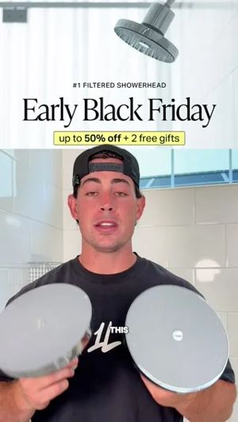
Video #08 · impressions rank 44 · 39s · live since 2026-11-16 · ID 1396345415666029
"This is your sign to give your whole family better water."
Cold Life original: "This is your sign to buy two… during this early Black Friday sale… keep one, gift one", lists claims, "I'd grab yours now… sale doesn't last forever".
Hook (first 3s): Creator holds up a glass of water at the sink: "This is your sign to give your whole family better water this year."
| Time | Shot | VO | On-screen text |
|---|
| 0–3s | Selfie at kitchen sink, glass up. | "This is your sign to give your whole family better water this year." | YOUR SIGN 💧 |
| 3–12s | Kids' bathroom, kitchen, shower montage. | "Not one filter for one tap. One system for every tap and every shower in the house." | Every tap · every shower |
| 12–22s | Real install photo; tech handshake (no faces needed). | "Built for Miami water, installed by Biscayne Water, with an extended 15-year warranty." | Extended 15-year warranty |
| 22–32s | Creator to camera. | "And it's zero down, zero percent interest. Payments as low as 69 a month." | $0 down · 0% interest · from $69/mo |
| 32–39s | End card. | "Start with the free water test. Link below." | Book your free test → |
B-roll from real assets: Real install photo; home montage (film).
AI-video prompts (filler only):
- Vertical 9:16, warm montage shot of a family kitchen faucet filling a child's cup with water, soft morning light, faces out of frame.
Meta headline: Better water for the whole family
Primary text: This is your sign to give your whole family better water. One Biscayne Water system filters every tap and every shower, with an extended 15-year warranty. 1000+ South Florida customers, 5 stars. $0 down, 0% interest. Book your free in-home water test.
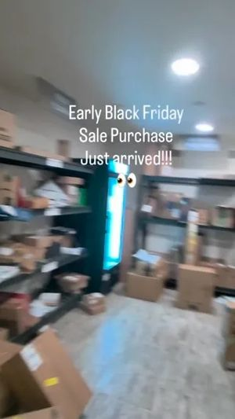
Video #09 · impressions rank 45 · 27s · live since 2026-11-16 · ID 1555217586442530
POV text-only: "Install day just happened!!"
Cold Life original: No voiceover. POV text-only UGC: "Early Black Friday Sale purchase just arrived!!", box on the doorstep, unboxing, install outdoors, text overlay "feature unlocked: filter designed to reduce PFAS, heavy metals, chlorine".
Hook (first 3s): POV phone footage of a Biscayne Water van/tech arriving at the driveway, text: "Our Biscayne Water install day just happened!!"
| Time | Shot | VO | On-screen text |
|---|
| 0–3s | POV driveway, tech arriving (faces blurred unless consented). | (music only) | Our install day just happened!! 💧 |
| 3–9s | Tech carrying tanks to the side of the house. | (music) | One morning. Every tap.* |
| 9–16s | Plumbing hookup close-ups, then the finished system (real install photo). | (music) | Carbon + softener + RO |
| 16–22s | Shower on, kitchen faucet on. | (music) | No chlorine smell · softer water |
| 22–27s | Text end card. | (music) | $0 down · 0% interest → Free water test |
B-roll from real assets: Needs real install-day phone footage (one job, with consent). Real install photo for the final reveal. *Only keep "one morning" if install time is confirmed.
AI-video prompts (filler only):
- Vertical 9:16, handheld POV phone video walking along the side of a South Florida stucco house toward a newly installed water filtration system, tropical plants, daylight.
Meta headline: Install day just happened 💧
Primary text: Install day! One Biscayne Water system now filters every tap and every shower in our house. Extended 15-year warranty, $0 down, 0% interest. Book your free in-home water test.
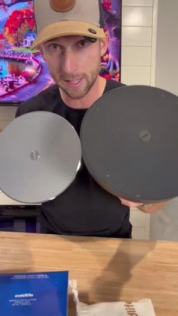
Video #10 · impressions rank 46 · 29s · live since 2026-11-16 · ID 1136080022338297
"Unlike your typical shower filter…"
Cold Life original: Creator at a desk with the box and two showerheads: "Get two, give one, keep one… two free gifts and free shipping, that's a no-brainer", then "unlike your typical cheap showerhead… selling like crazy".
Hook (first 3s): Creator holds a plain filtered showerhead next to a photo of the tanks: "Unlike your typical shower filter, this one covers your whole house."
| Time | Shot | VO | On-screen text |
|---|
| 0–3s | Desk setup, unbranded shower filter in hand. | "Unlike your typical shower filter, this one covers your whole house." | SHOWER FILTER vs WHOLE HOUSE |
| 3–12s | Real install photo, pointing at each tank. | "Carbon for chlorine and chloramine. Softener for hard water. RO for drinking water." | 3 stages, every tap |
| 12–20s | Shower and kitchen b-roll. | "So your shower, your sink and your washer all get filtered water." | No chlorine smell · softer water |
| 20–29s | Creator to camera, end card. | "Zero down, zero percent interest, extended 15-year warranty. Free water test first. Link below." | $0 down · 0% interest → Free test |
B-roll from real assets: Real install photo; desk/creator shot.
AI-video prompts (filler only):
- Vertical 9:16, a hand holding a plain unbranded chrome filtered showerhead over a wooden desk, product-review lighting, shallow depth of field.
Meta headline: One system for the whole house
Primary text: A shower filter covers one shower. A Biscayne Water whole-home system covers every tap and every shower: carbon, softener and RO. Extended 15-year warranty, $0 down, 0% interest. Book your free in-home water test.
6. Sources and limits
- Foreplay public API: brand analytics, page-ID ad pull (133 ads), and brand search. 135 credits used.
- Konvert MCP: brand lookup, top ads by impressions rank, browse by rank, transcripts, and 20 image generations (24 tries, 4 blocked by the safety filter). Generations are in the Konvert folder "Cold Life rip - Nov 22".
- EWG facts (18 contaminants, PFHxS 2,575×, arsenic, PFOA/PFOS) come from Doug's US vs THEM contaminant sheet, citing the EWG Tap Water Database for Miami-Dade WASD FL4130871. I didn't re-pull them today.
- Copy follows Halbert and Ogilvy: name the prospect and place (Miami-Dade & Broward), honest demos with no cheat glasses, specific sourced facts, a true reason why (the free test), and one clear call to action.